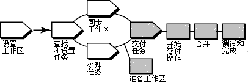

术语
ClearCase 统一变更管理（UCM）活动与 RUP 概念任务不同，且两者不应混淆。
概述
下图说明了 UCM 工作流程。此工具向导中讨论了加阴影的区域。

在 ClearCase 的 UCM 模型中，以 UCM 活动的形式捕获对源的修改。活动由变更集组成，它标识所有在处理任务期间创建的版本，以及一个描述性标题。
要使来自隔离工作空间的工作对于项目团队可用，您可将与 UCM 活动相关联的版本从开发流交付给项目的集成流。
ClearCase 将交付自开发流的文件和目录版本与集成流中的版本按照需要进行合并。但是，交付的更改在此时并不持久化，从而允许您通过集成流中的其他工作来测试已交付的更改。 测试之后，您可以取消交付操作或完成交付操作，使得交付结果持久化。
此工具向导在运行 Microsoft Windows 时适用。
使用 ClearCase UCM 交付操作由以下任务组成：
-
准备工作空间
-
启动交付操作
-
合并文件
-
测试和构建工作
-
完成交付操作
在启动交付操作之前，您需要通过执行以下任务来准备工作空间：
-
使用 UCM 重新定基操作来检查开发工作空间已更新为对项目使用最近建议的基线。
-
-
要启动重新定基操作，请从 Windows 任务栏单击开始 > 程序 > Rational Software > Rational ClearCase > ClearCase
Explorer。
-
在 ClearCase Explorer 中，右键单击开发视图的根目录，并单击重新定基流。
-
遵循“重新定基流向导”中的步骤。
-
必须首先检入工作，然后才能交付工作。使用 ClearCase 查找检出实用程序来查找所有检出的版本。
-
-
要从 ClearCase Explorer 启动查找检出实用程序，可转至“文件夹”窗格并右键单击想要搜索的文件夹。从弹出菜单中选择查找检出。
-
会显示一列检出的元素。选择想要检入的元素，并右键单击。 从弹出菜单中单击检入。
如果开发视图是快照视图，还必须执行更新操作。
在准备了工作空间之后，您就可以启动交付操作了，其中 ClearCase 会将更改从开发工作空间集成到集成工作空间。文件会检出到集成视图。
要启动交付操作，请转至 ClearCase Explorer 并右键单击开发视图的根目录。 从弹出菜单中单击从流交付。
ClearCase 将开发流中的工作和集成流中的工作合并起来。它为您完成不重要的合并，而且在遇到合并冲突的情况下，ClearCase DiffMerge 实用程序会提示您解决冲突。
要确保已交付的工作与集成流中的工作一致，请更新集成视图（该视图反映上一步骤的合并结果），并构建和测试其中的文件。
除了构建和测试，您可能还需要完成以下操作：
-
编辑检出的版本以解决构建错误。
-
检出和编辑其他文件。
请参阅工具向导：使用 Rational ClearCase 更新项目工作空间。
当您对更改与项目的最新工作一致的情况感到满意时，可从启动交付操作的开发视图完成交付操作。您还可以选择在此时取消操作。此步骤检入生成自合并操作的文件，并完成其他内务任务。
 请参阅 Developing Software
联机帮助，以获得各个步骤的详细信息。 请参阅 Developing Software
联机帮助，以获得各个步骤的详细信息。
|